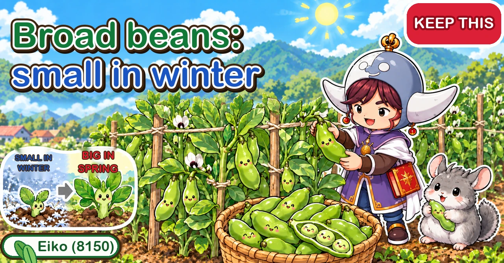

Broad beans: small in winter, a rush of growth in spring From autumn sowing to the early-summer harvest

"My plants died over the winter."
"They flowered, but no pods formed."
"The tips went black with aphids."
Hello, I'm Eiko. Eight years of growing vegetables organically and without pesticides, and a teaching licence in science.
Freshly picked broad beans, boiled straight away, are one of early summer's great treats. They spend more than six months in the ground — sown in autumn, through winter, picked in late spring — and the harvest lasts only two or three weeks.
Each season asks something a little different of you. This article goes through the whole year in order, from sowing to picking.
How to use this article. I garden in central Japan, roughly USDA zone 8b–9a, where the first frost lands in late November and the last in early spring. Autumn-sown broad beans need winters mild enough to overwinter them; where it's colder, follow your seed packet.
Basics. Sow: about 6 to 2 weeks before your first frost. Plant out: at 2–3 true leaves, around the first frost, 12–16 in (30–40 cm) apart. Go into winter at 6–8 in (15–20 cm). In late winter, pinch the main stem and keep 6–8 side shoots. Harvest: about 4–6 weeks after your last frost, for 2–3 weeks. Leave 3–5 years before beans return to the same spot.

What this diagram says （図解の文字）
- Sow in autumn, pick in early summer (months for central Japan)
- "Mid-Oct to mid-Nov: sowing" → "mid to late Nov: planting out (2–3 true leaves)" → "Dec–Feb: overwintering" — "height 15–20 cm", "over 20 cm they're vulnerable to cold" → "late Feb–Mar: pinching, 6–8 side shoots, feeding" → "Mar–Apr: canes and string" — "height 1–1.5 m" → "May: pods turn downward" — "the harvest lasts only 2–3 weeks"
- "Aphids: check stem tips and leaf undersides from winter"
- "Small in winter, a rush of growth in spring"
① What kind of crop it is
Hardy — but big plants aren't. Broad beans are cold-hardy, especially when small. But a plant that grows large before winter loses that hardiness; one explanation puts the line at about 8 in (20 cm). Sow too early in a warm autumn and they're too big by the time the cold arrives.
So the whole crop follows one pattern: keep them small in autumn, let them rush away in spring.
A legume that likes feeding. Most legumes get nitrogen from the air with the help of root bacteria and need little fertiliser. Broad beans, every grower agreed, need more than most of their family — go easy in winter, and feed when they start growing in spring.
Seed: look for a strain described as reliable, uniform and disease-resistant for a first go. Big seeds mean few per packet — one 50 ml packet held about 14. Sowing times vary by region, so check the packet.
② Where to grow them, and the soil
- Don't repeat. Broad beans dislike following themselves — leave at least 3 years, ideally 4–5. Peas and other beans count too
- They dislike acid soil. Lime before planting; shell-based lime can be planted into straight away
- Sunny, well-drained, but not parched. Poor drainage means weak roots and more disease
- Little or no base fertiliser where another crop has been — especially after a heavily fed crop like aubergines. On fresh or poor ground, one guide is about 3 litres of cow manure and 100 ml of chicken manure per square metre
- A simple soil test kit gives a rough idea of acidity and nutrients
③ Sowing
Some packets give about 59–77°F (15–25°C) for germination and 59–68°F (15–20°C) for growth. In a warm autumn, sow a little later so they don't get too big; in a cold one, don't leave it late.
Sow in pots
You can sow direct, but growers recommend pots: birds go for bean seeds, the seed is expensive, and pot-raised plants come up more evenly.
- Fill a 3½ in (9 cm) pot about 80% with seed compost
- Push the seed in with the black scar (hilum) angled downward
- Cover lightly so the top of the seed still just shows
- Water — but not too much
The black scar is where the root comes out, so it goes down at an angle. Pointing it up makes germination harder. If the seed is coated and the scar is hard to see, look for the slightly swollen, dented end.
Why so shallow? Seeds need oxygen to germinate, and a big seed buried deep can't get enough. Too much water makes the seed split or rot, so keep the compost just from drying out. Newspaper over the pots keeps them moist, but take it off as soon as shoots appear.
Keep the pots somewhere out of the rain, such as under the eaves; in a greenhouse on a warm autumn day, ventilate so it stays below about 86°F (30°C). After germination, still go easy on water — legumes don't need much, and overwatering gives leggy seedlings fast.

What this diagram says （図解の文字）
- Black scar down, sow shallow
- "Sowing" — "the black scar (the root comes out here)" ／ ◯ "push in with the scar angled down (top just showing)" ／ ✕ "scar up — hard to germinate" ／ "don't overwater / shoots in about a week"
- "Planting out" — "count each pair of leaflets as one leaf" ／ "2–3 true leaves" ／ "30–40 cm apart" ／ "shallow — the pot's compost only just covered" ／ "against aphids and wind"
- "Bury it deep and it can't breathe"
④ Planting out
Plant at 2–3 true leaves, about 15–20 days after sowing. Young plants establish faster, so don't be late. Counting leaves: each broad bean leaf splits into a pair of leaflets on one stalk — count the pair as one. Buying plants? Choose ones with about 3 true leaves and about 4 in (10 cm) tall; big plants may already have lost some hardiness.
- Make holes 12–16 in (30–40 cm) apart — wider spacing means better air flow, less disease and fewer pests
- Water the hole first
- Plant without breaking the rootball, shallowly — the pot's compost only just covered
- Water well
Fertiliser in the hole: none, or very little. In a warm autumn, one grower used only lime to stop the plants getting too big. Another adds a pinch of phosphate-containing bokashi: little nitrogen needed, but phosphate helps the roots and cold hardiness.
Mulch and netting: mulch warms the soil and stops weeds; silver reflective mulch helps keep aphids away. Then cover with an insect-net tunnel, edges buried — it keeps off aphids and doubles as a winter windbreak. Nets with silver thread woven in are even better.
⑤ Through the winter
This is the season to take most care.
- Size going into winter: about 6–8 in (15–20 cm), ideally around 6 in. Above 8 in they're more vulnerable — but not doomed; just give them more protection
- Fleece only once it's really cold — in central Japan, the coldest weeks of midwinter. Put it on too early and the warmth underneath makes them grow too much. One grower leaves the sides open for air
- Where it falls below about 25°F (−4°C), or for plants that got too big, add a fleece tunnel over the net
- Earth up round the base — it steadies the plant against wind, keeps it warmer, and stops cold air getting in through the mulch holes. Dry grass, straw, rice husks or leaves on top if you can
- Water little — but winter can be dry for weeks. If the soil is dry, water on a sunny morning
- Winter feeding only for small plants. At 6–8 in by early winter, none needed. If small or pale, a pinch of bokashi at the base
Too small is a problem too: a plant that enters winter tiny can't grow big in spring. You want about five true leaves.
⑥ Pinching and side shoots
Why pinch? Broad beans carry their pods more on the side shoots that come from the base than on the main stem. Left alone, the main stem keeps the food from reaching them.
Three possible times
- Early winter: at 4–6 in (10–15 cm), once you can see side shoots, cut the main stem near the base
- Late winter (recommended): at 8–12 in (20–30 cm), when the side shoots are growing, cut the main stem tip leaving 5 true leaves
- Mid-spring: when side shoots reach 8–12 in, cut the main stem and tidy the weak shoots
The late-winter option is the one most recommended: as it warms up, broad beans take off, and pinching then sends the growth into the side shoots. But plants that got big before winter are more vulnerable — pinch those in early winter to keep them low. Whenever you pinch, check the side shoots are there first.
Keep 6–8 side shoots. Left alone you'll get ten or more, all thin, with small pods. Keep the 6–8 thickest and cut the thin ones, so light reaches the centre.
Pinch the tips in spring. Once the shoots are over about 28 in (70 cm), cut 4–8 in (10–20 cm) off the tops. Broad beans flower and set pods from the bottom up; the top rarely makes pods, and cutting it sends food to the lower pods — and removes the aphids' favourite spot.

What this diagram says （図解の文字）
- Keep 6–8 side shoots — aphids gather at the tips
- "Pinching and side shoots" — "cut the main stem after checking for side shoots (leave 5 true leaves)" ／ ✕ "cut the thin side shoots" ／ "over 70 cm": "cut 10–20 cm off the tip" → "food goes to the lower pods"
- "Aphids" — "stem tips and leaf undersides" ／ "brush them off, then oil-and-soap spray" ／ "reflected light keeps them away"
- "Flowers from the bottom up, pods from the bottom up"
⑦ Feeding, support and water
First feed when growth starts in late winter, then again as flowering begins and as pods start. Plants that got too big before winter: skip the late-winter feed and start at flowering.
- Make two holes 8–12 in (20–30 cm) from the stem
- Put about 20 ml of chicken manure in each (40 ml per plant)
- Add a little water to help it break down, then push the soil back in
Don't leave fertiliser spilled on the surface — the smell can attract aphids. A pinch of bokashi at the base, or chicken-manure pellets in the paths, also work.
Support: they can reach 3–5 ft (1–1.5 m) in spring and blow over — and fallen plants yield less. In early to mid-spring, put a cane at each corner of the bed and run string round the plants, starting about 4 in (10 cm) off the ground and adding tiers as they grow. Silver tape instead of string doubles as aphid deterrent. Add tiers or tighten the string as the pods get heavy.
Water: sparing in winter, but don't let them dry out at flowering and pod set — dryness then means fewer pods.
⑧ Aphids: the main enemy
Aphids are said to find almost every broad bean plant. They gather at the stem tips and under the leaves; a tip that looks black may be solid aphids. They can overwinter in the tips and explode in spring, so start checking in winter.
- Brush them off with a soft brush, then spray the fallen ones with oil-and-soap solution: one recipe is 2 litres of water, two bottle-capfuls of cooking oil and one of liquid soap
- Reflect light with silver mulch or silver-threaded netting
- Sprinkle shell-based lime lightly over the plants every 2–3 weeks
- Pinch out the tips they love
- Don't leave fertiliser lying around
Left unchecked, sucked leaves can blacken, and aphids can carry viruses that cause mottled leaves.
Neighbours
Low leafy crops sown round overwintering broad beans make good use of space and help them through winter: crown daisy (its scent may deter aphids), and spinach, komatsuna, radishes or mini pak choi, whose leaves shelter the young beans from cold wind and frost. Keep onions, leeks and other alliums away — they're said to discourage the root bacteria beans rely on.
⑨ Troubleshooting
No flowers, or flowers dropping
- Too much winter protection: broad beans need a spell of cold to flower. Late-sown plants kept too warm may not get enough
- Not enough light: crowded plants or too many side shoots. Thin to 6–7
- Aphids sucking the plant dry
Yellow leaves, black edges, plants not growing
Poor drainage, a spot where beans grew recently, or cold damage. Weak plants often have loose roots when tugged.
Black leaf tips in winter
- Lots of aphids → aphid damage or disease
- Bone-dry soil → drought
- Soggy soil and the whole plant blackening → root damage
- Only the tips black → probably cold damage
Look at the plant and the soil before deciding what to do.
⑩ Harvest
- Pods that pointed at the sky turn to hang downward (the Japanese name, "sky bean", comes from the upward pods)
- The seam along the back turns dark and glossy
- The fuzz disappears and the colour deepens
- Squeeze gently: you can feel the shape of each bean pressing out — the surest sign. Unready pods still have spongy padding round the beans
The window is 2–3 weeks; late pods lose sweetness. Once the pods start to droop, look every day. Small pods of about 2 in (5 cm) near the top by late spring won't fill — pick them off early. If the lower pods are clearly ahead of the upper ones, once you've picked the lower ones, the plant is done: clear it. Missed ones can be dried hard in the sun and used as dried beans.
Before harvest, strip yellowing lower leaves for air flow — and keep an eye on aphids to the end.
⑪ Containers
- One plant per 8–12 in (20–30 cm) pot
- Firm the surface, lay the seed scar-down at an angle, cover, press, and water until it runs out of the bottom
- For a late sowing, keep it indoors at about 59–68°F (15–20°C) until it's up, then move it outside
- Water well whenever the surface dries. In early spring, scatter a little organic fertiliser round the plant
⑫ Where growers disagree, and common mistakes
- Size going into winter: "6–8 in", "ideally 6 in", "4–6 in". All agree: not too big
- Winter side shoots: some cut early side shoots, overwinter the main stem and grow the spring shoots — a method aimed at extra-large pods. For a first try, check for side shoots, then pinch the main stem is easier to follow
- How much soil over the seed: "top just showing" in pots; "just covered" for some direct sowings
- Fertiliser in the planting hole: a little phosphate, or lime only in a warm year — judge by the season
- Sown early, died in winter → too big before the cold. Sow later in a warm autumn, feed less
- Fleece on too early → overgrown. Wait for the real cold
- Ignored the aphids → winter stowaways explode in spring
- No support in time → they shoot up in spring. Have canes ready
- Picked too late → check daily once pods droop
One warm winter, a grower's plants reached 16–20 in (40–50 cm) by midwinter, and the soft new growth was killed by cold. Plants that pass 6 in before winter need a close eye. Afterwards, don't follow with another legume.
Science bit: the broad bean year, explained 🔬
Winter cold is the signal to flower. A spell of cold tells the plant it's time to make flowers in spring — so coddling it in winter can mean fewer flowers.
Winter is for roots. Above ground the plant barely grows, while it stores food in its roots. In spring it spends those savings on a sudden spurt — which is why small-in-winter, rush-in-spring works.
Bottom up. Flowers and pods start at the base and climb. The upper flowers rarely set, so pinching the tip sends food to the pods that will.
A hungry legume. Root bacteria do supply nitrogen, but broad beans make big pods and big beans in a short spring rush — more than the bacteria alone can keep up with. Hence the spring feeding.
To sum up
- ✅ Sow in autumn, pick in late spring — a 2–3 week harvest
- ✅ Don't sow too early in a warm autumn
- ✅ Pots, black scar angled down, top just showing
- ✅ Plant at 2–3 true leaves, 12–16 in apart, shallow. Lime acid soil
- ✅ Into winter at 6–8 in; fleece only in the real cold
- ✅ Late winter: pinch the main stem, keep 6–8 side shoots
- ✅ Feed in spring; support in early spring
- ✅ Check tips and leaf undersides for aphids from winter
- ✅ Pods droop and the seam darkens → pick
- ✅ 3–5 years between bean crops; keep alliums away
Broad beans keep you company from autumn to early summer. Keep them small in winter, let them go in spring — and the reward is beans fresh from the pod. Check your packet for your local sowing time and start with one seed per pot
Thank you for reading!